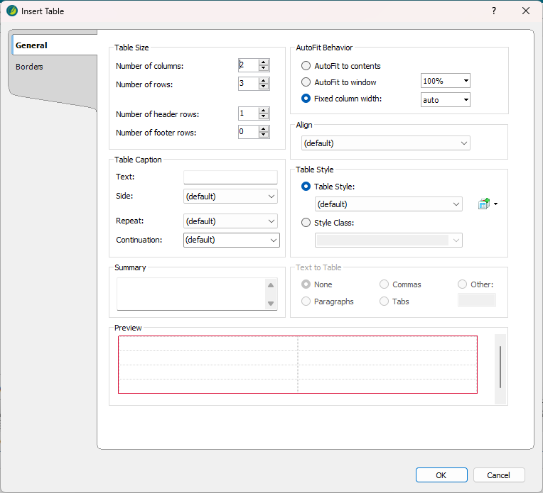

Tables are very useful for presenting information.
I recommend your cursor be in a blank paragraph.

In a real Flare project, you would have different table styles. These styles would define borders, shading, etc.
These should be defined in the Project as a Table Style.
A blank table is added to the Flare topic. You can add text to the table.
Congratulations! You've completed the minimum requirements for a Flare project.
Save your file and commit it to GitHub. If you need a refresher on working with GitHub, see Handouts/git_cheatsheet.pdf.